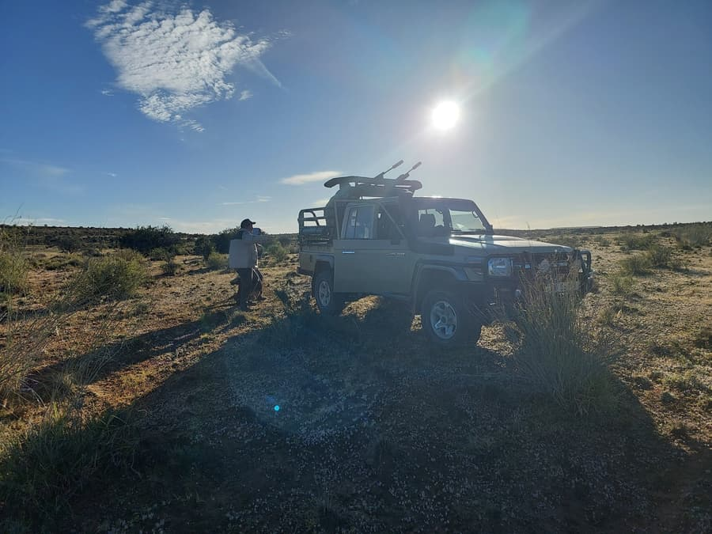
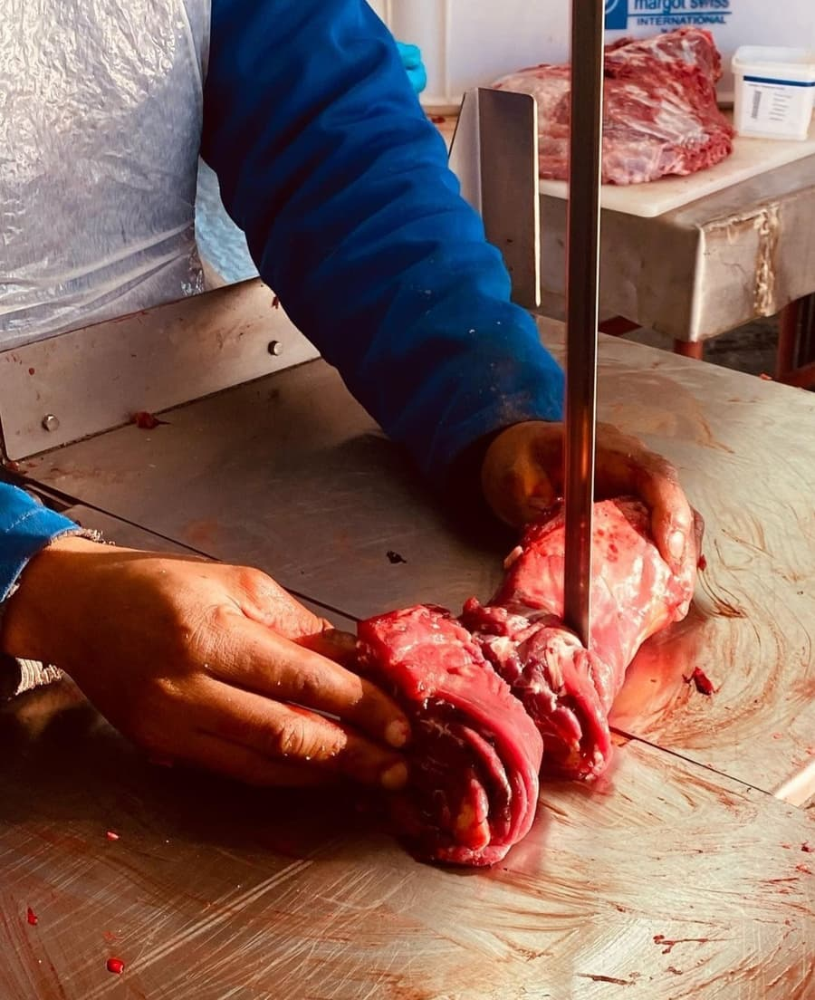

Species
More than 20 plains game species, from springbok and blesbok to kudu, gemsbok, sable and roan.
View species
Guided plains game hunting on 45,000 acres, for individual hunters, hunting groups and corporate parties.
A complete hunting operation
Hartsrust is a hunting farm first. The species, the hunting styles, the range, the processing and the lodging are all on the property, so your hunt runs from the first stalk to the processed meat without leaving the farm.
More than 20 plains game species, from springbok and blesbok to kudu, gemsbok, sable and roan.
View species
Long-range hunting, walk & stalk, voorsit jag, Springbuck and Wildebeest Slams, and our 1 km range.
View hunts
Our on-site abattoir professionally processes your game into high-quality cuts and products.
Visit Die Slaghuis
Group & corporate hunts
From hunting clubs and groups of friends to companies hosting clients or rewarding a team, Hartsrust is built for hunting parties. Both farm houses can be booked together for up to 31 guests, and we plan the hunting days around your group.
Rates & inclusions
Day rates and accommodation are R750 per person. Trophy fees are charged per animal. All prices are in ZAR and exclude VAT.
Included in the day rate
Charged separately
FAQ
More than 20 plains game species and colour variants, including springbok (with a four-variant Springbuck Slam), blesbok, gemsbok, kudu, impala (rooibok), waterbuck, lechwe, black, blue and golden wildebeest, red hartebeest, sable, roan, scimitar-horned oryx, Burchell's and Hartmann's zebra and warthog. See the full species list.
Long-range hunting, walk & stalk, and traditional voorsit jag, plus bush walking and waterbank setups for waterbuck and lechwe. Read more about our hunts.
Yes. Our two farm houses sleep up to 31 guests (Goodhope 14, Hartsrust House 17), and we plan hunting days, range time, catered veld lunches and activities for non-hunters around your group.
Yes. We welcome seasoned marksmen and beginners alike. Our on-site range runs from 100 m to 1 km and rifles and shotguns are available for hire.
The day rate is R750 per person and includes field dressing of game, lunch and hunting vehicles. Ice and wood are provided with moderate use and daily cleaning is included. Trophy fees are charged per animal and all prices exclude VAT. See the price list.
Yes. Die Slaghuis, our on-site abattoir, processes your game at R60 per kg (clean carcass). Caping is available at an additional charge and taxidermist services are offered.
Call Arno on 072 955 8741 or email arnosteenkamp@yahoo.com with your dates, group size and the species you'd like to hunt. A non-refundable booking deposit of R20,000 secures your dates.
Send us your dates and group size and we'll come back with availability and a costing.